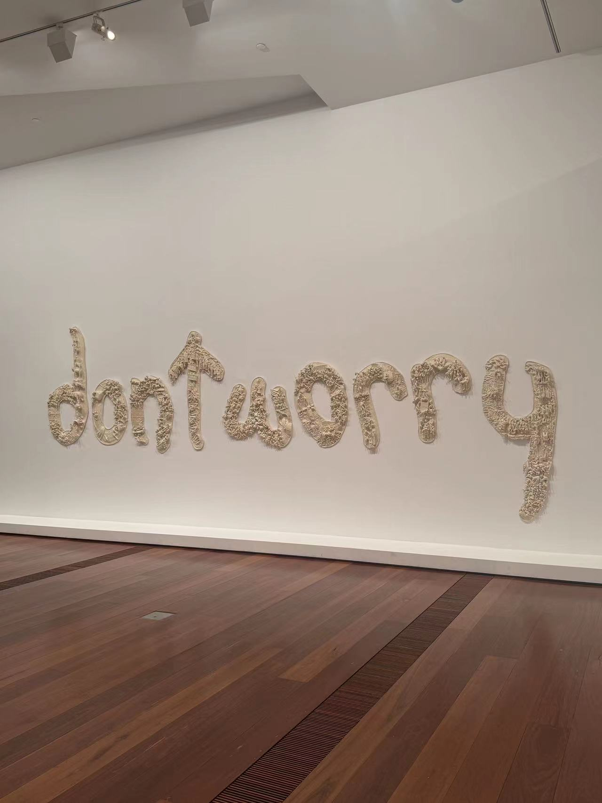
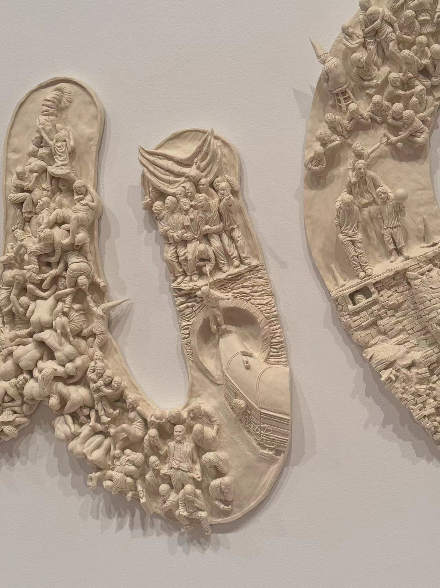
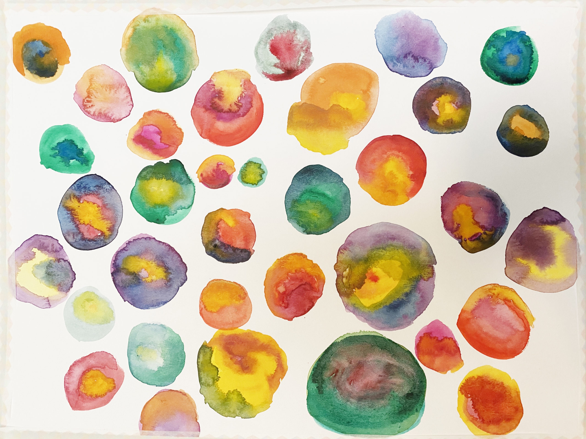
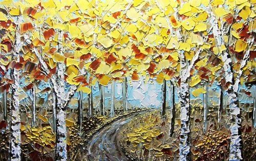
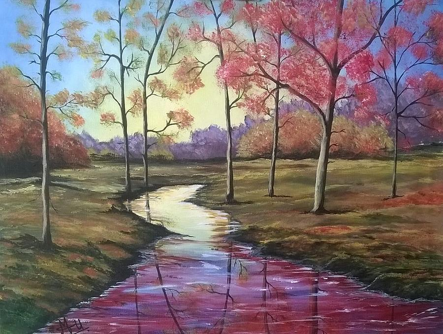

Textures in Art
Pedagogical Philosophy: Texture adds a tactile dimension to art, helping children express sensory experiences.





Museum Activities:
- Texture Exploration Tours: Educators can guide children to focus on artworks that have rich textures. They can provide textured samples that children can touch while discussing the artworks.
- Texture Creation Workshops: Children can create their own textured artworks using a variety of materials.
Values:
Textures can enhance sensory awareness and descriptive skills, allowing children to communicate more nuanced and detailed experiences.